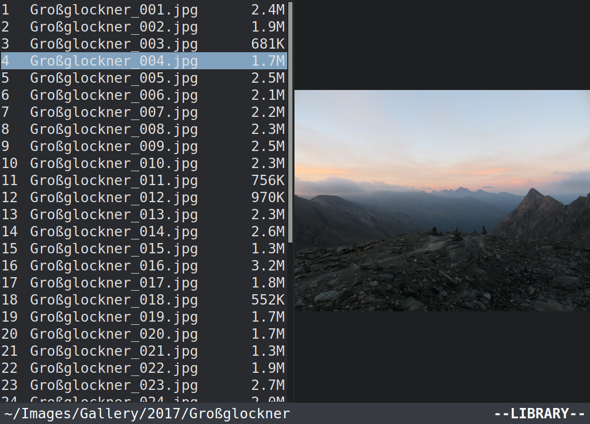
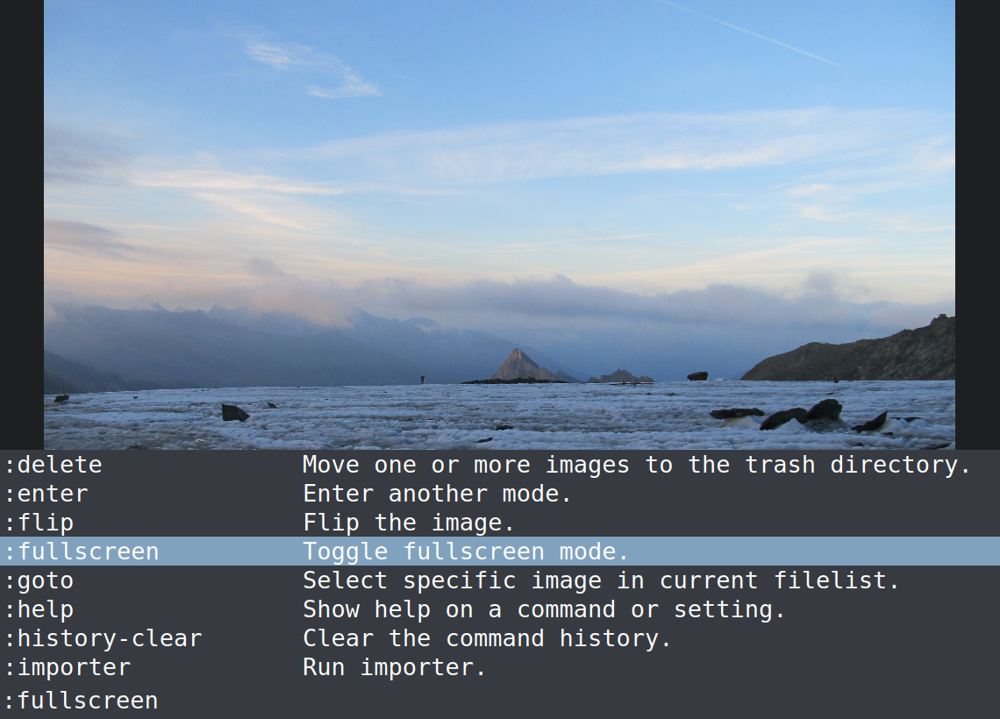

{kind=link}
Note
This Qt port is the future of vimiv. New features will only be implemented here and there are already many improvements compared to the gtk version. The old version is only recommended if you require a more stable software. In case there is anything you miss here, please open an issue on github.
Vimiv is an image viewer with vim-like keybindings. It is written in python3 using the Qt5 toolkit and is free software, licensed under the GPL. Some of the features are:
Simple library browser
Thumbnail mode
Basic image editing
Command line with tab completion
Complete customization with style sheets
For information on how to get vimiv running take a look at the installation instructions. Afterwards, this is a good place to get started. For more information please check out the documentation.
Screenshots#
Light theme:

{kind=link}
Dark theme:
 {kind=link}
{kind=link}
Contents#
Getting Help#
You can contact me under my email address or open an issue on github if you think the question is of general interest.
Contributing / Reporting Bugs#
You want to contribute to vimiv? Great! Feel free to take a look at the Contributing for more details and a few tips on how to get started.
The best way to report bugs is to open an
issue on github. If you do
not have a github account, feel free to
contact me directly. If possible, please reproduce
the bug running vimiv --log-level debug and include the log file located in
$XDG_DATA_HOME/vimiv/vimiv.log where $XDG_DATA_HOME is usually
~/.local/share/ if you have not configured it.
Thanks To#
James Campos, author of Pim which was the starting point for the old Gtk3 version of vimiv.
Bert Muennich, author of sxiv which inspired many of the features of vimiv.
Florian Bruhin, author of qutebrowser whose code has helped me a lot with Qt5.
Anyone who has contributed or reported bugs.
License#
This program is free software: you can redistribute it and/or modify it under the terms of the GNU General Public License as published by the Free Software Foundation, either version 3 of the License, or (at your option) any later version.
This program is distributed in the hope that it will be useful, but WITHOUT ANY WARRANTY; without even the implied warranty of MERCHANTABILITY or FITNESS FOR A PARTICULAR PURPOSE. See the GNU General Public License for more details.
You should have received a copy of the GNU General Public License along with this program. If not, see <http://www.gnu.org/licenses/>.